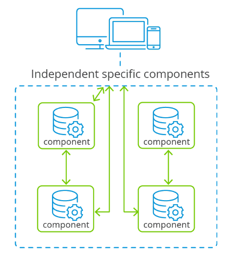

Component-Based Architecture is designed to promote reusability, modularity, and maintainability of software. Components are designed to have clear interfaces, making it easier to interact with and integrate them within the system. This approach allows developers to focus on developing individual components with well-defined responsibilities, without needing to worry about the entire system’s intricacies.
Reusability and Faster Development:
Components are designed to be self-contained and reusable. This significantly speeds up development time by allowing developers to focus on assembling and configuring existing components rather than starting from scratch.
Modularity and Maintainability:
Components are isolated units with clear interfaces and well-defined responsibilities. This modularity makes the system easier to understand and maintain. Changes or updates to a single component can be made without affecting the entire system, reducing the risk of unintended side effects and making maintenance more manageable.
Collaboration and Parallel Development:
Since components are independent and have standardized interfaces, development teams can work on different components simultaneously.
Reduced Development Costs:
By reusing existing components, developers can reduce the amount of code they need to write from scratch. This can lead to lower development costs and faster time-to-market for new software projects.
Component Identification:
Identify the functionalities or features that can be encapsulated within separate components. Break down your application’s requirements into distinct modules of functionality that can be developed and maintained independently.
Design Clear Interfaces:
For each component, define clear and well-documented interfaces. Determine how the component will interact with other components and how data and information will flow between them. This will ensure that components can work together seamlessly.
Reusable Component Development:
Develop individual components following the defined interfaces. Ensure that each component is modular, self-contained, and can be reused across projects. Pay attention to keeping each component cohesive and focused on a specific responsibility.